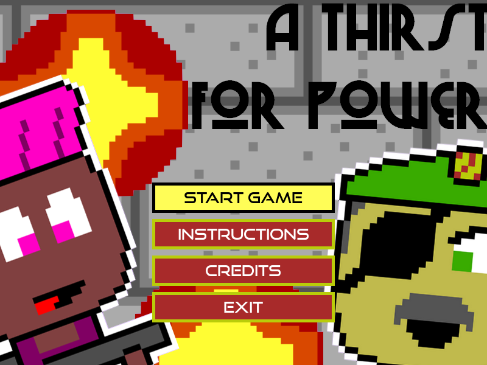

This was my first Game Jam ever, back in July 2017 for Ludum Dare 39. I made it in a team of four people.
At the time, I didn't have a lot of coding experience, and I was the only one of the group that wasn't a professional full-time programmer. I still wanted to participate, and spent my weekend mostly doing the art assets (in fact, I did the vast majority of them!), doing the character design, and coming up with the story. I also did quite a lot of level design, though we shared that task a lot.
This is possibly the most polished of the games I've made, but I think that's mostly because we were 4 people who spent a WHOLE weekend together in the same appartment, probably working 30 to 40 hours each.
At the moment, I'm unable to find a built copy of the game, but I'll be on the hunt for it!